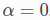

Writing documentation¶
Marian’s documentation is generated using Sphinx + Breathe + Doxygen + Exhale. Doxygen is used for documenting the source code and Sphinx (together with the extensions of Breathe and Exhale) for managing handwritten documentation and generating library API reference.
Whenever you add new code or propose changes to Marian, we would highly appreciate if you also add new Doxygen comments or update existing ones as needed along with your changes (see the Doxygen guidelines below). Your Doxygen comments will be integrated in the Marian’s documentation automatically.
There is an ongoing and incremental effort with the goal of documenting essential Marian API in a consistent way. The existing code might not follow these guidelines, but new code should.
Code documentation with Doxygen¶
Doxygen is a powerful documentation system for C++ and many other languages that parses and extracts documentation comments included in the source code to generate a comprehensive documentation, for example, in HTML or LaTeX format.
Doxygen basics¶
Doxygen recognises several special comment blocks with some additional markings. In Marian, we
follow the Javadoc style, which consist of a C-style comment block starting with two *’s,
like this:
/**
* ... text ...
*/
A documentation comment for all main entities in the code (e.g. classes, functions, methods, etc.) always includes two sections: a brief summary and detailed description. In Marian, a Java-style comment block automatically starts a brief description which ends at the first dot followed by a space or new line (i.e. there is no need to add the @brief keyword). Here is an example:
/**
* Brief description which ends at this dot. Details follow
* here.
*/
If you want to put documentation after members (e.g., a variable and enum), you have to put an
additional < marker in the comment block.
int var; ///< Brief description after the member
Doxygen commands¶
More details in the documentation can be provided using special Doxygen’s special commands (keywords) which start with an at-sign (@). See Doxygen special commands for the complete list of available commands. Here, we list the most common Doxygen commands, which we use to document Marian:
Doxygen Command |
Detailed Description |
Example |
|---|---|---|
@param |
Add a parameter description for a function parameter |
|
@return |
Add a return value description for a function |
|
@see |
Add a cross-reference to classes, functions, methods, variables, files or URL |
|
@ref |
Create a reference to another item being documented. |
|
@copybrief |
Copy the brief description from the object specified |
|
@copydetails |
Copy the detailed documentation from the object specified |
|
@note |
Add a note message where the text will be highlighted |
|
@warning |
Add a warning message where the text will be highlighted |
|
@b |
Display a single word using a bold font |
|
@c |
Display a single word using a typewriter font |
|
@p |
Display a single word
using a typewriter
font. Equivalent to
|
|
@em |
Display a single word in italics. |
|
Math formulas in Doxygen¶
Doxygen supports LaTeX math formulas in the documentation. To include an inline formula that appears
in the running text, we need wrap it by a pair of @f$ commands, for example:
Default is no smoothing, @f$\alpha = 0 @f$.
This will result in: Default is no smoothing, 
For the longer formulas which are in separate lines, we can put \f[ and \f] commands between
the formulas, for instance:
@f[
\operatorname{gelu}(x) = x \cdot \Phi(x)
= x \cdot \frac{1}{2}\left[
1 + \operatorname{erf}\left(\frac{x}{\sqrt{2}}\right)
\right]
\sim \operatorname{swish}(x, 1.702)
@f]
This will result in:
Example of formula 2¶
Note
Make sure the formula contains valid commands in LaTeX’s math-mode.
Recommendations¶
First of all, add Doxygen comments in the header files. You can find the examples of Doxygen comments in src/graph/expression_graph.h. A good practice is to keep Doxygen comments as intuitive and short as possible. Try not to introduce unnecessary vertical space (e.g., an empty line). A basic template of Doxygen comments is shown as follows:
/**
* Brief summary.
* Detailed description. More detail.
* @see Some reference
* @param <name> Parameter description.
* @return Return value description.
*/
User documentation with Sphinx¶
Sphinx supports reStructuredText and Markdown documents. Marian’s user documentation files are located in doc. The default format of Sphinx is reStructuredText and most of the framework’s power comes from the richness of its default reStructuredText markup format.
reStructuredText¶
As Marian’s documentation is generated using Sphinx + Breathe + Doxygen + Exhale,
reStructuredText is the best language to use if you need to utilise many directives generated by
Sphinx / Breathe / Exhale and are not satisfied with Markdown features as mentioned below.
There are many useful directives supported by Sphinx / Breathe / Exhale which you could use in
your user documentation. Here we highlight the most useful directives when documenting Marian.
For the complete reStructuredText syntax guide, please refer to the mini guide provided by
Exhale. Sphinx docs also covers the most important aspects of reStructuredText. Read more in the
reStructuredText tutorials provided Sphinx.
The first useful set of directives are Breathe directives which are used to include documentation for different constructs. The available commands are listed below:
.. doxygenindex:: .. doxygenfunction:: .. doxygenstruct:: .. doxygenenum:: .. doxygentypedef:: .. doxygenclass::
The second one is Exhale directives which are used to link different constructs. The available commands are listed below:
:class:`namespace::ClassName` :func:`namespace::ClassName::methodName` :member:`namespace::ClassName::mMemberName` :func:`namespace::funcName`
Tip
reStructuredText is particularly sensitive to whitespace! If the rendered text does not turn out as what you expected, double check space(s) or newline(s).
It takes several minutes to build Marian’s documentation (mostly due to Exhale). If you work on a user documentation and need to check the rendered result frequently, you can comment out the exhale extension in
conf.pyfile once Marian code documentation is generated (i.e., building the whole documentation once). This will greatly speed up the documentation building.
Markdown¶
Although reStructuredText is more powerful than Markdown, it might feel less intuitive if you have never used it before. Sphinx docs now use MyST-Parser as a default extension for handling Markdown, which adds more Markdown-friendly syntax for the purpose of the documentation, in addition to the CommonMark features. Read more in the MyST-Parser documentation.
For instance, MyST-Parser supports directives syntax, a generic block of explicit markup syntax
available in reStructuredText, such as note admonitions:
```{note} Notes require **no** arguments, so content can start here. ```
The above markdown text will be rendered as below:
Note
Notes require no arguments, so content can start here.
Another useful feature is that you can include reStructuredText text/files into a Markdown file.
This means you can take advantage of directives generated by Sphinx / Breathe / Exhale with
ease, especially if you want to highlight/reference the functions or classes in Marian code
documentation.
In general Sphinx docs only supports reStructuredText commands (such as sphinx.ext.autodoc and
Breathe directives) to interact with the code documentation [2].
For example, let’s assume that you want to include the function documentation of
marian::inits::fromValue ( float ) in the user documentation. You can use the following Breathe
doxygenfunction directive for this:
-
Ptr<NodeInitializer>
marian::inits::fromValue(float value) Initialize tensor with given value.
Creates a NodeInitializer that will initialize the given tensor with
value. Works with any underlying numeric tensor type.- Return
To display the exactly same content as above, MyST-Parser offers the special eval-rst directive to wrap reStructuredText directives:
```{eval-rst} .. doxygenfunction:: marian::inits::fromValue(float) ```
Also, you can link functions or classes in Marian code documentation with
eval-rst directive. For example, to link marian::inits::fromValue(float) you can use the
following markdown syntax:
```{eval-rst} Link to :func:`marian::inits::fromValue` ```
Or you can directly link to the function in markdown hyperlink syntax:
Link to [`marian::inits::fromValue(float)`](api/function_namespacemarian_1_1inits_1a71bb6dee3704c85c5f63a97eead43a1e.html#_CPPv4N6marian5inits9fromValueEf)
Both outputs will be rendered with a clickable hyperlink to marian::inits::fromValue(float) in
the corresponding Library API page (as shown below):
Link to
marian::inits::fromValue()
Note
The reference links for marian::inits::fromValue(float) is generated by Exhale. For more
information about how to cross-reference the code documentation, see Exhale’s linking
strategy.